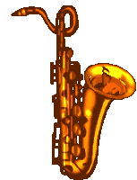

El jazz surge en el siglo XIX entre los esclavos negros del sur de Estados Unidos quienes acostumbraban a celebrar tocando distintos tipos de percusión y cantando. Las autoridades de la época prohibieron este hábito, así que se vieron obligados a prescindir de los instrumentos y únicamente cantar y batir palmas.
Sin embargo esta restricción no se aplicaba la Plaza del Congo de Nueva Orleans, donde podían reunirse y tocar toda clase de instrumentos si ninguna restricción.
La iglesia trató de controlar la música de los esclavos obligándoles a cantar salmos para «convertirles» a estilos musicales europeos. El resultado fue que los esclavos adaptaron los estilos europeos a su música tradicional, surgiendo así un estilo potente y original. Que seria la semilla del Jazz.
En 1865 los esclavos fueron declarados libres. Lo que les permitió reunirse e interpretar su música sin ninguna restricción.
En el último tercio del siglo XIX surge un estilo musical pianístico que se conocería como Ragtime o «ritmo roto». Que sería clave como influencia en el jazz. A destacar, entre otros, a al pianista Scott Joplin con una forma de tocar que fue trasladada a pianola.
A principios del siglo XX ya existían las primeras bandas que tocaban un «proto-jazz» rudimentario. Entre estas cabe destacar la figura de Buddy Bolden, al que muchos consideran uno de los «padres del género». Con una formación usual de corneta, trombón, clarinete (melodía) y banjo, tuba, caja y bombo (base rítmica) a la que posteriormente se añadiría contrabajo, piano, batería e incluso violín.
Este «estilo de Nueva Orleans» fue ganando adeptos.
Los blancos y criollos del Delta del Misisipí comenzaron a interesarse por esta música, haciéndola suya y alejándose de los ritmos africanos. Dándole más importancia a la improvisación y añadiendo piano y saxofón. Así surgiría el Dixieland con figuras destacables como Papa Jack Laine quien se conocería como «el padre del Dixieland» o Nick LaRocca quien grabaría el que se considera primer disco de Jazz.
Las autoridades cerraron en 1917 el célebre barrio de Storyville, donde se encontraban la mayoría de locales de música en vivo. Esto obligó a los artistas a desplazarse hacia el norte, donde había una intensa vida nocturna. En especial Chicago.
En la ciudad se desarrolló durante esta década un estilo más centrado en la improvisación, los «nuevos músicos» blancos imitaban el estilo de los negros pero lo adaptaban alejándose de los ritmos africanos. Incluso en la instrumentación hubo cambios, ganando fuerza el saxofón. Bix Beiderbecke destacaría por su innata capacidad para la improvisación.
Paralelamente con la migración de músicos por el cierre de Storyville otros artistas fueron hacia Nueva York. En la ciudad los artistas desarrollaron un estilo mas abierto y universal. Destacaría la figura de Duke Ellington, quien alcanzó gran fama. Este estilo supuso un impulso para las Big Bands que ganarían notoriedad años más tarde.